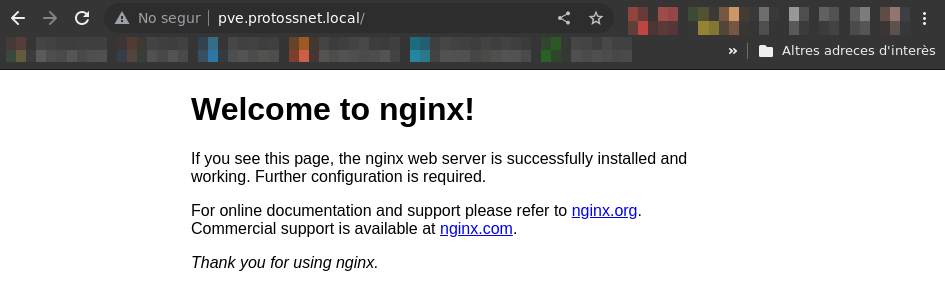
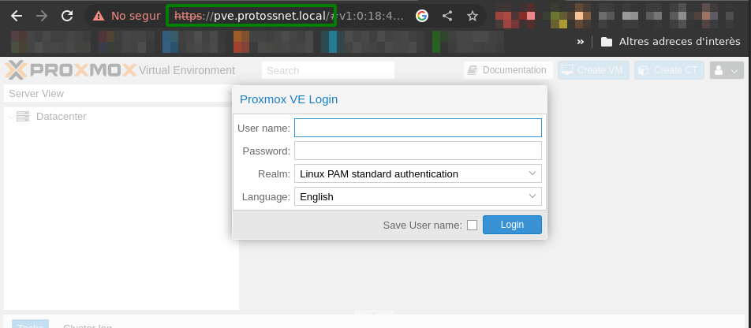

Part 1 - Installing Proxmox VE
What is Proxmox VE?
Pending to describe Proxmox
Initial configuration
IP address assigned via DHCP
This way the DHCP server will assign the correct domain name and the server will be accessible by its domain name.
A server should always have a predictable IP, so configure the DHCP server to lease the same IP to the Proxmox server network MAC address.
Pending to elaborate
Later on, we’ll configure our own virtual DHCP and DNS servers to provide internal IPs to our VM and containers.
Allow HTTPS on Port 443 via Nginx
As Lars mentions in his guide, the web interface of Proxmox is available on port 8006 instead of the default HTTPS port 443, and HTTP on Port 80 is not available at all.
Having HTTPS acesses through ports different than 443 can be very bothersome as we need to remember what exact port is the one used on each service.
In order to solve this, we’ll use a light-weight web server that also acts as a reverse proxy natively in the Proxmox server, so we can redirect 443 requests to the 8006 port.
Later on we’ll be also deploying other Nginx servers within our internal networks to redirect traffic to each one of our services
Install and Configure Nginx
Connect via SSH to the PVE server as root:
Install the nginx-light package:
A web server should already be up and running. Verify it by accessing http://<proxmox-ip>/ or http://<proxmox-hostname>.<local-domain>, a blank welcome screen should appear.

Once done, remove the default Nginx configuration from the Proxmox server…
…and create a new file /etc/nginx/sites-available/proxmox-web-interface with the following content:
/etc/nginx/sites-available/proxmox-web-interface
server {
# Enforce HTTPS by redirecting requests
listen 80;
listen [::]:80;
server_name pve.protossnet.local;
location / {
return 301 https://pve.protossnet.local$request_uri;
}
}
server {
listen 443 ssl http2;
listen [::]:443 ssl http2;
server_name pve.protossnet.local;
ssl_certificate_key /etc/pve/local/pve-ssl.key;
ssl_certificate /etc/pve/local/pve-ssl.pem;
# Proxy configuration
location / {
proxy_http_version 1.1;
proxy_set_header Upgrade $http_upgrade;
proxy_set_header Connection "upgrade";
proxy_pass https://127.0.0.1:8006;
proxy_buffering off;
client_max_body_size 0;
proxy_connect_timeout 3600s;
proxy_read_timeout 3600s;
proxy_send_timeout 3600s;
send_timeout 3600s;
proxy_set_header Host $host;
proxy_ssl_name $host;
proxy_set_header X-Forwarded-For $remote_addr;
}
}Lars has additional and more complex Nginx configs for the web interface, it’s worth checking them out to learn about how Nginx works and how powerful it can be!
After updating the configuration, we must create a softlink from the sites-enabled directory to make it available:
Finally, we check if Nginx can spot any errors:
Restart Nginx and Enable it by Default
To start Nginx and make sure it starts automatically after a system reboot, run:
# Restart the Nginx service
systemctl restart nginx.service
# Permanently enable the Nginx service
systemctl enable nginx.serviceFinally, make sure that Nginx will start only after Proxmox starts, since the certificates may otherwise not be available yet. To do that, create a file /etc/systemd/system/nginx.service.d/override.conf with the content:
Alternatively, you can also use systemctl edit nginx.service to edit this file.
With the service restarted, check that we can access the Proxmox VE web interface through the expected HTTPS port by going to https://<proxmox-hostname>.<local-domain> or https://<proxmox-ip>:

Right now Nginx is using the SSL certificates provided by Proxmox on installation time. We should provide valid SSL certifications to avoid this, such as the ones that Let’s Encript can generate.
Make Proxmox UI Service Listen to Localhost Only
Lars suggests this change to ensure that everyone is using the Nginx set-up, but I don’t really understand what exactly means. I’ve applied the change and at least I can still access it from within my local network.
Create /etc/default/pveproxy and set:
Then restart the pveproxy service: